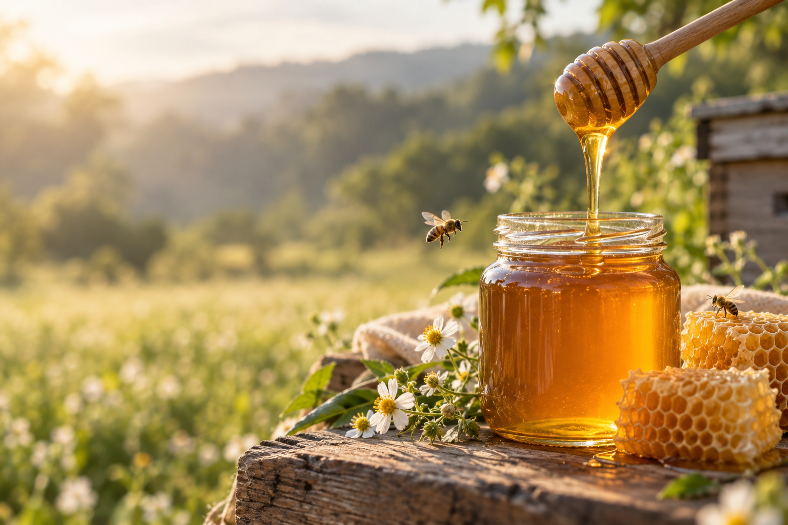
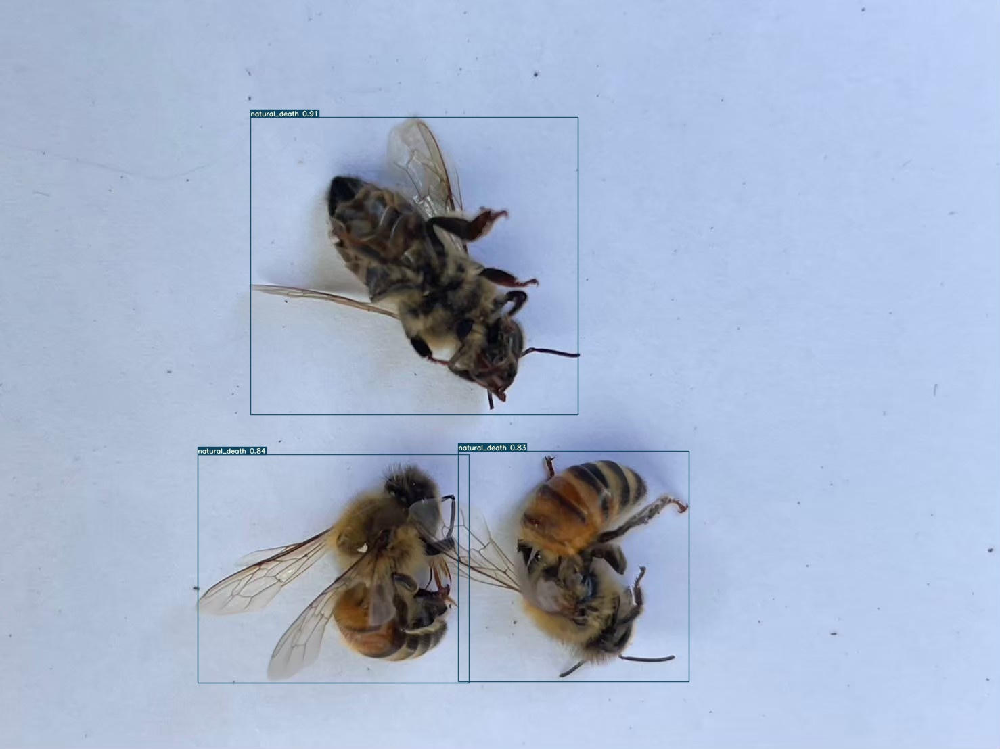
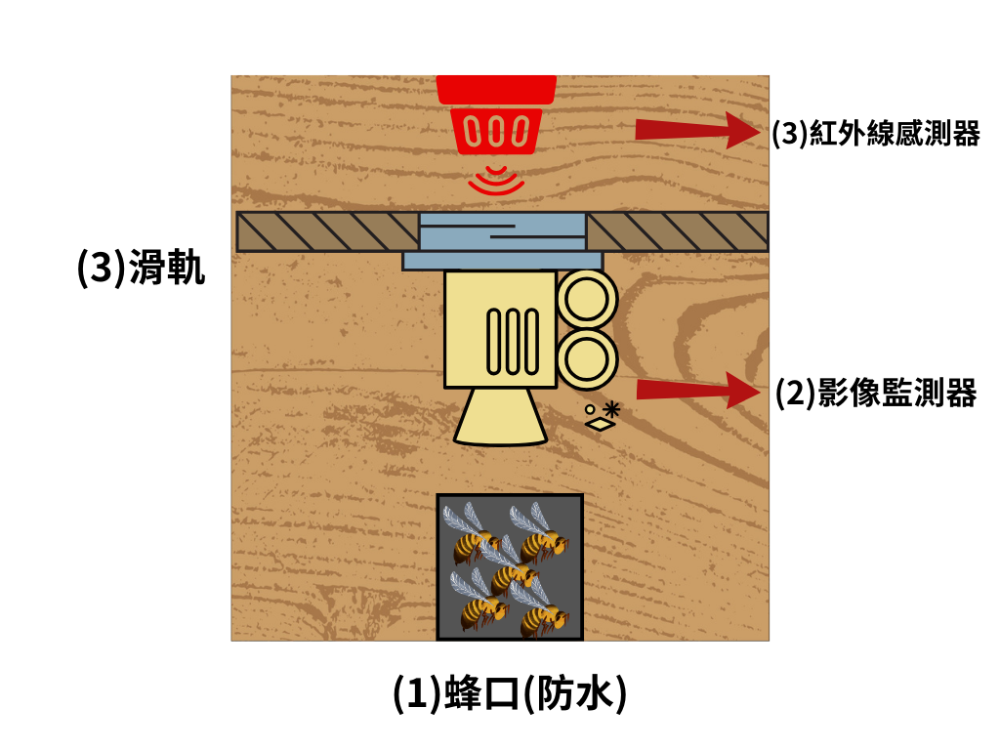

少量、分散、持續發生
巢門周邊偶見少量完整蜂屍，且採集與出勤正常，多屬工蜂自然汰換。重點不是單隻外觀，而是每日數量趨勢。
- 固定時間記錄蜂屍數量
- 觀察是否突然增加或聚集
- 同步確認存糧與出勤

APIARY WEATHER · 戶外蜂場天氣
天氣會影響蜜源分泌、蜜蜂出勤與開箱時機。資料由 Open-Meteo 即時取得，判讀僅供蜂場作業參考。
正在讀取即時天氣…
開箱前仍請觀察蜂群實際活動。
ASK CHEN · 養蜂智庫
智庫會比對陳家蜂蜜品牌資料、農業部養蜂技術、蜂業研究與本機智慧蜂箱研究，提供有來源的初步答案。
目前為在地知識檢索版，不取代獸醫、農政單位或實驗室診斷。
KNOWLEDGE BASE · 主題知識庫
BEE MORTALITY · 死亡蜜蜂分類
看數量、速度、位置、姿態與蜂群狀態，建立初步分類；真正死因仍需採樣與專業檢驗。

巢門周邊偶見少量完整蜂屍，且採集與出勤正常，多屬工蜂自然汰換。重點不是單隻外觀，而是每日數量趨勢。
SINCE THREE GENERATIONS
陳家蜂蜜自有蜂場位於屏東枋山，三代養蜂超過 70 年。陳生章先生於 2003 年獲全國十大傑出農民神農獎，長年投入蜂王選育、蜂產品品質與農作授粉。

TRUSTED SOURCES · 資料來源